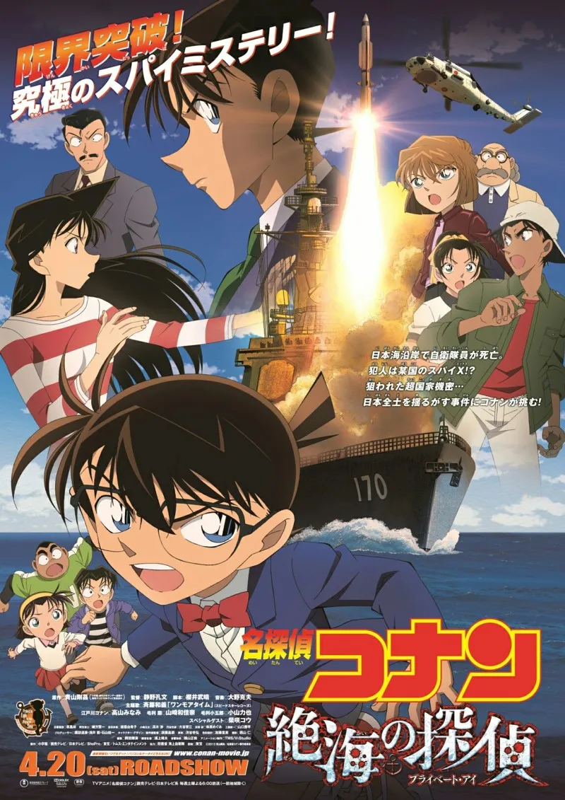
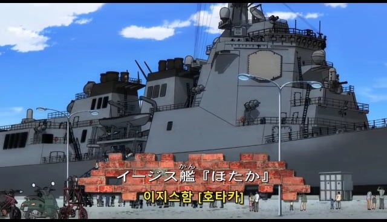
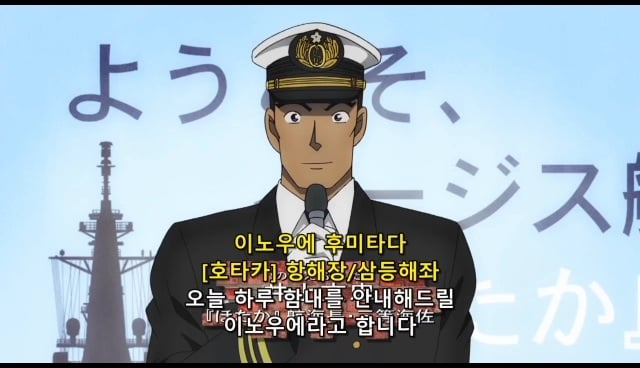
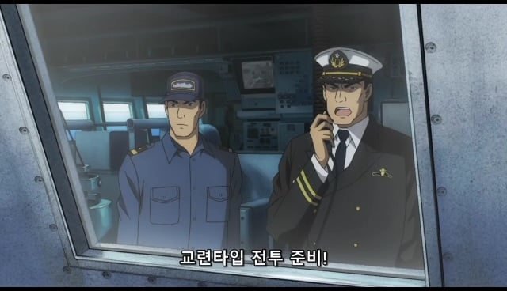
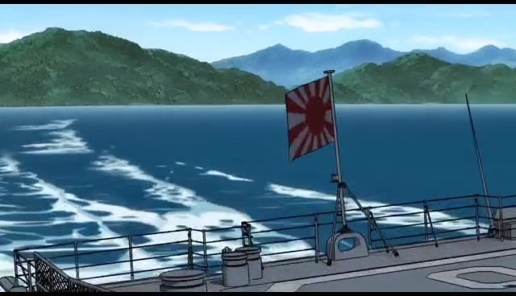

명탐정 코난 17번째 극장판인 '절해의 탐정'인데...
한국에서 미개봉된 극장판임.

그 이유가 극장판의 주 무대가 일본 해자대의 이지스함인데다...


자위대 인물들이 주요 등장인물로 나오고...

심지어 해자대의 군기인 욱일기도 등장해서
미개봉된걸로 추정됨 ㄷㄷ...

명탐정 코난 17번째 극장판인 '절해의 탐정'인데...
한국에서 미개봉된 극장판임.

그 이유가 극장판의 주 무대가 일본 해자대의 이지스함인데다...


자위대 인물들이 주요 등장인물로 나오고...

심지어 해자대의 군기인 욱일기도 등장해서
미개봉된걸로 추정됨 ㄷㄷ...
옛날처럼 태극기로 수정하고 해군이라고 로컬라이징 하면 될거 같은데 그냥 안한건가
그냥 망작이라 수입 안 한 거임
재미없긴 하더라
강수진 유튜브인가 보니까 요즘은 로컬라이징도 안하는 추세래
수십년 남도일 미란이 장미 하다가 이젠 신이치 란 하이바라 이런다고
저게 축구공으로 포신돌리는 그거아님?
축구공은 뭐든 돌려
저 옆모습 코뿔소는 언제봐도 적응 안되네 ㅋㅋㅋㅋ
아 시발 뭔소리인가 하고 올려서 봤는데 아오!!! 지식의 저주를 전파하지마라
너 뿔며든거야
게다가 저기 악인이 국적불명의 간첩인데 노골적으로 한국인으로 의심되지 않냐?
너 정말 핵심을 찔렀어
뭔 이지스함 크기를 2차대전 전함만하게 그려놨네 ..ㅋㅋ
전범기 ㅋㅋ
그냥 죽어버렸으면 좋겠네
로컬라이징으로 해결 가능한 수준이고 한국에서만 미개봉인 것도 아니라서 걍 씹노잼일뿐이라던데 ㅋㅋㅋㅋㅋ
모든 코난 극장판중 가장 쳐망한 극장판
치명적인 설정오류에 캐붕 스토리병신 작화도병신
나도 개드립에서 짤방 요약본으로만 봤는데 스토리부터 ㅈ망이고 캐붕도 심해서 코난 팬이어도 한국 개봉 안한거 아쉽진 않을듯
미개봉 하길잘했네 ㅋㅋㅋ 미친놈들인가
앞으로 턱 존내 튀어나왔네
ㅈ본답군
자위대 연속 살인사건이라도 일어나나
전범기에 절해 라는 탐정은 개봉하기어렵지. 개하하하